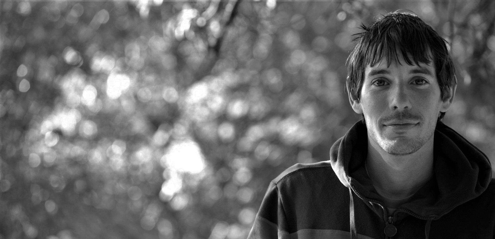

Alex Honnald
"It’s about being a warrior… This is your path and you will pursue it with excellence. You face your fear because your goal demands it."
Climbing
Alexander Honnold, born in Sacramento, California on the 17 August 1985, is a climber who specialises in 'big wall' climbing. He is most famous for being the first person to climb a route up El Capitan free solo (without protective gear and ropes); a feat captured in the video documentary Free Solo. Honnold has tackled a number of climbing challenges that simply boggle the normal persons mind.
First person to free solo freerider, El Capitan

The imposing El Capitan, around 915 meters tall from base to summit
Alex climbed El Capitan with the aid of only a pair of La Sportiva TC Pro climbing shoes and a chalk bag. On May 3, 2017, he ascended the Freerider line in 3 hours and 56 minutes, beginning at 5:32 am and reaching the peak at 9:28 am.
The feat was captured by Alex's long time friend and professional photographer and film maker, Jimmy Chin in the documentary Free Solo.
After completing the climb, Alex went back to his camper van to train hangs. When asked why, he said "but I've been trying to hangboard every other day, and it's the other day."
Speed record in 2018 of The Nose, El Capitan with Tommy Caldwell, 1:58:07
"On June 6, 2018, Alex Honnold and Tommy Caldwell set the Nose speed record on El Capitan in 01:58:07, fulfilling Honnold's “lifetime goal” of a sub-2-hour Nose ascent. This is the actual record breaking climb, bottom to top, in one continuous time-lapse shot." - Reel Rock
Solo of Yosemite Triple Crown, Mt. Watkins, El Cap, Half Dome, in 18h 50m
Golden Piton Award for achievements in climbing, 2010
The Honnold Foundation
"I live out of my van, which gives me a first-hand appreciation for power and lighting. A few years ago, I rebuilt the interior of my van to include solar panels and a battery that powers LEDs for lighting and allows me to charge my phone and laptop."
Founded by professional rock climber Alex Honnold in 2012, the charity has the purpose of installing solar power in impoverished communities.
Alex focused on solar energy because of it's ease to setup in remote communties, and the Honnald Foundation supports community scale projects that increase climate resilience, bolster social and economic equity, reduce environmental impact, and improve peoples' lives.
“I'm deeply worried about the future of the world in the face of climate change, the unbridled use of fossil fuels, and so on. It's this passion, as much as anything, that led to the idea of the Honnold Foundation.” Alex Honnold - Alone on the Wall
To find out more, please click on the link below
Life beyond
Childhood
Born in Sacramento, California, Alex started climbing from an early age. Deciding that he was not a massively talented climber, he did however enjoy climbing and climbed often.
He graduated from High School, and started a civil engineering degree at the University of California, Berkely. However he dropped out and started to focus more on climbing, becoming a career move.
Family
Honnold married his longtime girlfriend, Sanni McCandless, in September 2020. The couple has a home in Las Vegas, Nevada. They welcomed their first child, a daughter named June, on February 17, 2022.
Repost from @sannimccandless “June J Honnold, was born at 10:30pm on Thursday, February 17th ♥️ Things started well...
Posted by Alex Honnold on Thursday, February 24, 2022
Diet
Alex is a keen vegetarian, while initially this was born from the convenience of living in a van without a fridge, Alex's keen sense of eco-preservation has led him to change his lifestyle to reduce his carbon footprint.
As a professional climber, nurition is an important part of Alex's life. His diet comprises many vegetables, occasionally eggs, and large smoothies.
While traveling, Alex enjoys eating preshelled pistachos.
Alex eats bell peppers like they are apples.